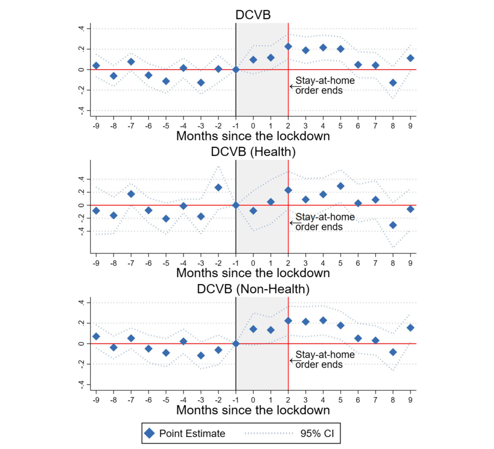

Results
Difference-in-Differences Results
Table 2 in the paper presents the main DiD estimates across three samples: all institutions, healthcare institutions, and non-healthcare institutions.
| DCVB (Overall) | DCVB (Health) | DCVB (Non-Health) | |
|---|---|---|---|
| (1) | (2) | (3) | |
| 1(COVID-19) | 0.120*** | −0.060 | 0.166*** |
| (0.034) | (0.043) | (0.039) | |
| N | 2,304 | 468 | 1,836 |
| R² | 0.32 | 0.19 | 0.35 |
| Mean DCVB pre-COVID | 0.705 | 0.667 | 0.715 |
| COVID-19 % change | 17.02% | −9.09% | 23.21% |
| Baseline FE | X | X | X |
Source: IMCO. Baseline fixed effects at the institution, month, and year level. Robust standard errors clustered at the institution level. Significance: * p<0.10, ** p<0.05, *** p<0.01.
The headline result: The pandemic increased discretionary contracting by 17.02% on average. This effect is entirely driven by non-healthcare institutions (+23.21%). The healthcare estimate is negative and statistically insignificant.
Event Study
Figure 1 from the paper shows the monthly path of the DCVB ratio before and after the lockdown for all three samples.

Three patterns stand out:
1. Parallel trends hold pre-pandemic. For all three panels, the pre-pandemic coefficients (\(q = -9\) through \(q = -2\)) are not statistically significant. The event study shows that the changes observed are a consequence of the pandemic, not of pre-existing trends.
2. The effect peaks and fades. For overall and non-health DCVB, the sharpest increase occurs at \(q = 2\) (May 2020), the month the stay-at-home order was lifted. Non-healthcare institutions witness a 20% impact on their DCVB ratio by the second month, persisting for four subsequent months. The effect then returns to pre-pandemic levels, consistent with the resilience of crime theory rather than theories that predict a permanent increase.
3. Healthcare is flat throughout. The DCVB ratio for healthcare institutions remains unaffected at the onset of the pandemic. The coefficients are small and statistically indistinguishable from zero throughout.
Robustness
Because three outcome columns are tested simultaneously (overall, health, non-health), there is a risk of false discovery. The paper applies the False Discovery Rate correction of Anderson (2008), replacing p-values with q-values. Panel A of Table 3 presents both the respective p-values (in parentheses) and q-values (in brackets):
| DCVB (Overall) | DCVB (Health) | DCVB (Non-Health) | |
|---|---|---|---|
| 1(COVID-19) | 0.120*** | −0.060 | 0.166*** |
| p-value | (0.001) | (0.191) | (0.001) |
| q-value | [0.003] | [0.154] | [0.001] |
| N | 2,304 | 468 | 1,836 |
| R² | 0.32 | 0.19 | 0.35 |
There is a small increase in the q-values for DCVB (Overall), yet none of the significant results based on p-values becomes insignificant when using q-values.
This methodology simulates a bound around the parameter of interest based on an expected value of the R². When the bounds exclude zero, it indicates that the parameter of interest remains robust to omitted variable bias. Panel B of Table 3 shows the Oster bounds:
| DCVB (Overall) | DCVB (Health) | DCVB (Non-Health) | |
|---|---|---|---|
| Oster bounds | [0.017, 1.234] | [−1.364, −0.020] | [0.026, 1.176] |
| N | 2,304 | 468 | 1,836 |
| R² | 0.32 | 0.19 | 0.35 |
The bounds exclude zero for overall DCVB and non-healthcare DCVB, confirming those results are not sensitive to omitted variable bias.
Panels C and D of Table 3 reproduce the DiD results after omitting the top 1% and top 5% of contracts with the highest average value:
| DCVB (Overall) | DCVB (Health) | DCVB (Non-Health) | |
|---|---|---|---|
| Outliers (1%) | |||
| 1(COVID-19) | 0.127*** | −0.060 | 0.175*** |
| (0.034) | (0.043) | (0.038) | |
| N | 2,189 | 454 | 1,735 |
| R² | 0.30 | 0.21 | 0.33 |
| Outliers (5%) | |||
| 1(COVID-19) | 0.141*** | −0.018 | 0.182*** |
| (0.034) | (0.052) | (0.039) | |
| N | 2,189 | 454 | 1,735 |
| R² | 0.30 | 0.21 | 0.33 |
The results remain statistically significant for overall DCVB and non-health DCVB.
The event study shows that, in general, the pre-event coefficients are not statistically significant, providing evidence in favor of parallel trends. The paper additionally applies the methodology proposed by Rambachan and Roth (2023), which generates bounds to determine the point at which there is a violation of the parallel trends assumption after the event. The bounds depend on a coefficient M, a measure of linear extrapolation using the worst pre-treatment violation of parallel trends between consecutive periods.
The results show that the parallel trends assumption is robust until M = 0.15. This suggests that the post-treatment effect is robust to a post-treatment violation of parallel trends equal to 15% of the worst pre-treatment violation of parallel trends.
Mechanisms
Beyond the main DiD result, the paper investigates two potential mechanisms linking the pandemic to higher non-healthcare DCVB.
Market Concentration
A Herfindahl-Hirschman Index (HHI) is constructed for each institution-month, measuring how concentrated the supplier market is for each institution:
\[\text{HHI}_{iyt} = \sum_{j=1}^{n_{iyt}} s_{jiyt}^2\]
where \(s_{jiyt}\) is the share of contracts given to provider \(j\), in market (institution) \(i\), year \(y\), and month \(t\), and \(n_{iyt}\) denotes the number of providers hired by institution \(i\) in a specific month.
Late Disclosure of Contract Information
The paper also tests whether the pandemic changed the proportion of contracts for which procedural information was published after the contract’s starting date, used as a proxy for irregularities in the disclosure of contract information.
Putting the mechanisms together: Two mechanisms are explored: (1) the influence of specific institutions, with particular focus on the Mexican Army (SEDENA), which has been extending its involvement in various governmental areas during the current administration; and (2) the pandemic’s impact on providers’ market concentration and irregularities in the disclosure of contract information. The estimates remain stable when removing one institution at a time, and the event study results continue to hold when excluding SEDENA from the sample.